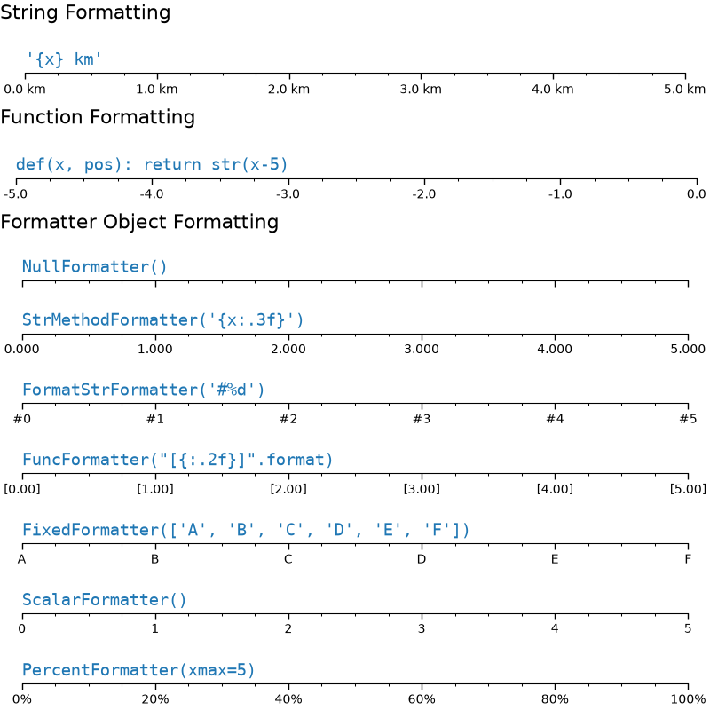

Note
Go to the end to download the full example code.
Tick formatters#
Tick formatters define how the numeric value associated with a tick on an axis is formatted as a string.
This example illustrates the usage and effect of the most common formatters.
The tick format is configured via the function set_major_formatter
or set_minor_formatter. It accepts:
a format string, which implicitly creates a
StrMethodFormatter.a function, implicitly creates a
FuncFormatter.an instance of a
Formattersubclass. The most common areNullFormatter: No labels on the ticks.StrMethodFormatter: Use stringstr.formatmethod.FormatStrFormatter: Use %-style formatting.FuncFormatter: Define labels through a function.FixedFormatter: Set the label strings explicitly.ScalarFormatter: Default formatter for scalars: auto-pick the format string.PercentFormatter: Format labels as a percentage.
See Tick formatting for a complete list.
import matplotlib.pyplot as plt
from matplotlib import ticker
def setup(ax, title):
"""Set up common parameters for the Axes in the example."""
# only show the bottom spine
ax.yaxis.set_major_locator(ticker.NullLocator())
ax.spines[['left', 'right', 'top']].set_visible(False)
# define tick positions
ax.xaxis.set_major_locator(ticker.MultipleLocator(1.00))
ax.xaxis.set_minor_locator(ticker.MultipleLocator(0.25))
ax.xaxis.set_ticks_position('bottom')
ax.tick_params(which='major', width=1.00, length=5)
ax.tick_params(which='minor', width=0.75, length=2.5, labelsize=10)
ax.set_xlim(0, 5)
ax.set_ylim(0, 1)
ax.text(0.0, 0.2, title, transform=ax.transAxes,
fontsize=14, fontname='Monospace', color='tab:blue')
fig = plt.figure(figsize=(8, 8), layout='constrained')
fig0, fig1, fig2 = fig.subfigures(3, height_ratios=[1.5, 1.5, 7.5])
fig0.suptitle('String Formatting', fontsize=16, x=0, ha='left')
ax0 = fig0.subplots()
setup(ax0, title="'{x} km'")
ax0.xaxis.set_major_formatter('{x} km')
fig1.suptitle('Function Formatting', fontsize=16, x=0, ha='left')
ax1 = fig1.subplots()
setup(ax1, title="def(x, pos): return str(x-5)")
ax1.xaxis.set_major_formatter(lambda x, pos: str(x-5))
fig2.suptitle('Formatter Object Formatting', fontsize=16, x=0, ha='left')
axs2 = fig2.subplots(7, 1)
setup(axs2[0], title="NullFormatter()")
axs2[0].xaxis.set_major_formatter(ticker.NullFormatter())
setup(axs2[1], title="StrMethodFormatter('{x:.3f}')")
axs2[1].xaxis.set_major_formatter(ticker.StrMethodFormatter("{x:.3f}"))
setup(axs2[2], title="FormatStrFormatter('#%d')")
axs2[2].xaxis.set_major_formatter(ticker.FormatStrFormatter("#%d"))
def fmt_two_digits(x, pos):
return f'[{x:.2f}]'
setup(axs2[3], title='FuncFormatter("[{:.2f}]".format)')
axs2[3].xaxis.set_major_formatter(ticker.FuncFormatter(fmt_two_digits))
setup(axs2[4], title="FixedFormatter(['A', 'B', 'C', 'D', 'E', 'F'])")
# FixedFormatter should only be used together with FixedLocator.
# Otherwise, one cannot be sure where the labels will end up.
positions = [0, 1, 2, 3, 4, 5]
labels = ['A', 'B', 'C', 'D', 'E', 'F']
axs2[4].xaxis.set_major_locator(ticker.FixedLocator(positions))
axs2[4].xaxis.set_major_formatter(ticker.FixedFormatter(labels))
setup(axs2[5], title="ScalarFormatter()")
axs2[5].xaxis.set_major_formatter(ticker.ScalarFormatter(useMathText=True))
setup(axs2[6], title="PercentFormatter(xmax=5)")
axs2[6].xaxis.set_major_formatter(ticker.PercentFormatter(xmax=5))
plt.show()

Total running time of the script: (0 minutes 1.371 seconds)